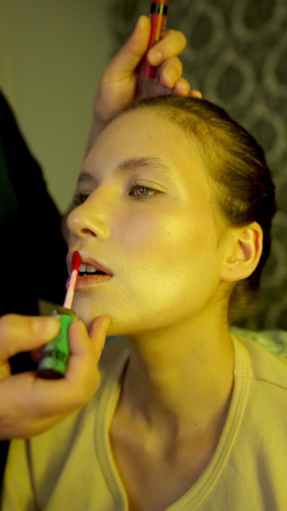

OSC'ARTProduction

OSC'ART Production est un studio de production audiovisuelle basé à Jedeida, dans le Grand Tunis. Nous accompagnons marques, entreprises et artistes, de l’idée jusqu’à la livraison des fichiers.
Notre terrain de jeu : la publicité et le brand content, les contenus pour les réseaux sociaux, les clips musicaux, l’événementiel et la photographie. Chaque projet est pensé pour son support — 16:9, 9:16 ou 4:5 — sans sacrifier la composition.
Nous tournons en Sony Alpha, étalonnons sous DaVinci Resolve, et utilisons de plus en plus la 3D et l’IA générative pour aller au-delà de ce qu’une caméra peut capter.
- Basé à
- Jedeida, Manouba — Tunisie
- Formats
- 16:9 · 9:16 · 4:5
- Outils
- Sony Alpha · DaVinci Resolve · Blender
- @osc.art_production
Le début du voyage… et un grand rêve
Tout a commencé en 2019, une caméra sur un stabilisateur, en pleine nature, avec l’envie de raconter des histoires en images.
Depuis, ce rêve est devenu OSC'ART Production : des marques, des artistes et des événements filmés à travers la Tunisie — avec le même regard qu’au premier jour.
Ce qui
nous guide
L’image d’abord
Lumière, cadre, couleur : chaque plan doit pouvoir tenir seul.
Pensé pour la diffusion
Un contenu réussi est un contenu vu. Nous construisons pour le canal visé.
De bout en bout
Le même regard de la pré-production à l’étalonnage final.
Au-delà de la caméra
3D, motion et IA quand l’idée le demande.